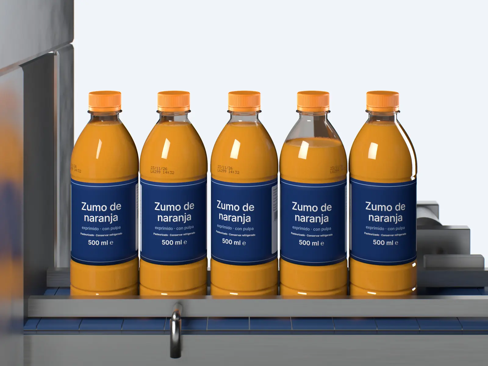
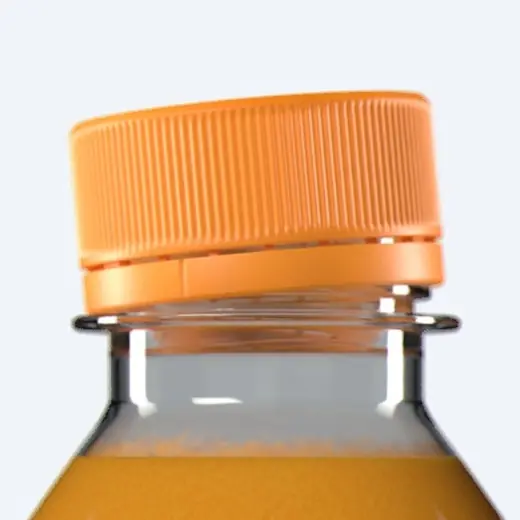
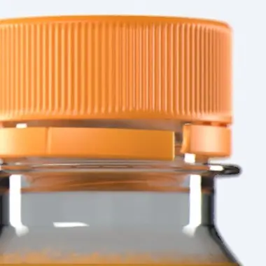
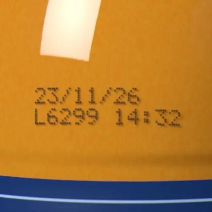
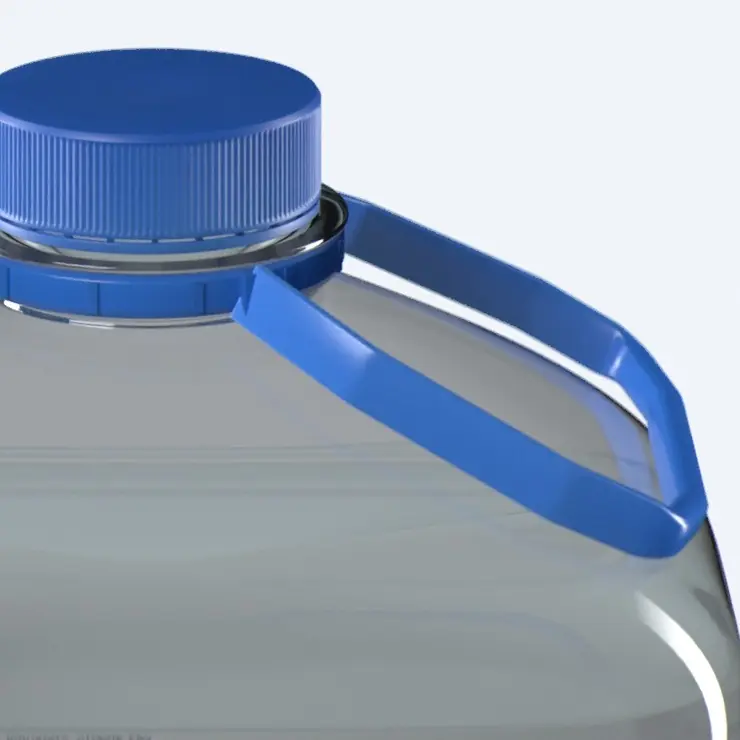

Control a 360° del tapón, la boca, el cuello y el nivel de llenado con visión artificial y aprendizaje profundo. Analiza el 100 % de la producción, hasta 30 000 unidades/hora.

Inspección a 360°, sin orientar el envase
Aprendizaje profundo desarrollado por AIS Group
Registro detallado de cada producción
Del cierre al nivel de llenado
Comprueba que el tapón está presente, íntegro y bien colocado, controla el precinto y el nivel, y lee el marcaje del envase. En vidrio y PET, desde 0,33 L hasta garrafas de varios litros.
Defectos del tapón

Tapón inclinado

Integridad del precinto
Tapón solidario
Nivel de llenado

Presencia y lectura del lote

Presencia y orientación del asa
Formato, inspección y control
Especificaciones para la integración del equipo en la línea. La cadencia depende del formato y de las inspecciones configuradas.
Equipo
Formatos compatibles
Botellas de vidrio y PET con tapón de plástico, de corcho o de rosca (pilfer). Rango habitual: de formatos pequeños (~0,33 L) a garrafas de varios litros (p. ej., 8 L)
Diseño
Fabricado en INOX 304, con cúpula cerrada que protege las cámaras y la iluminación
Cadencia máxima
Hasta 30 000 unidades/hora (según el número de inspecciones y el formato)
Separación mínima
Un envase de separación entre botellas (a cargo del cliente)
Cámaras
3 cámaras en color de alta resolución para el tapón, el nivel y el asa de las garrafas; 4.ª cámara opcional para la presencia del lote y la etiqueta
Iluminador
Cúpula de LED de alta potencia con controlador diseñado por AIS Vision Systems, para iluminar el cierre de forma homogénea
Dimensiones
Módulo compacto de unos 750 × 950 mm
Controladora
Procesador multicámara para visión artificial y aprendizaje profundo
Instalación y manejo
Panel de control
Pantalla táctil de 21 pulgadas para visualizar y ajustar el sistema
Señalización
Baliza luminosa de estado del equipo
Instalación eléctrica
Alimentación monofásica en el punto de instalación
Mecánica
Acceso para limpieza y mantenimiento; guiado adaptado a la línea
Cabezal de inspección sobre la cinta, con la pantalla de control al lado.
De la imagen a la acción
Ajuste de recetas, análisis de imágenes y registro de resultados en un mismo entorno de producción.
Imágenes y resultados de la inspección en la interfaz del equipo.
Software
Aprendizaje profundo
Modelos precargados y entrenamiento con ejemplos mediante Rosepetal
Recetas
Creación y ajuste de formatos sin programación
Datos de producción
Registro estadístico y copia de seguridad en la nube de recetas, imágenes y resultados
Gestión remota
Supervisión de producción y gestión de recetas vía web con credenciales seguras
Cierre y boca
Control del tapón y del nivel; en retornables, detección de roturas, deformaciones y desgaste en la boca
Marcaje
Lectura de lote, caducidad, códigos 2D y números de serie en el tapón o el cuello, según configuración
Opciones de integración
Rechazo progresivo o por impacto, zona de acumulación del producto rechazado, cintas de transporte, centrador de producto y TrazAIS: trazabilidad y serialización. Cámara adicional para boca, nivel, lote o etiqueta según la aplicación. AIS PRO 8: rechazo progresivo de cinco pistones para desviar el envase sin volcarlo.